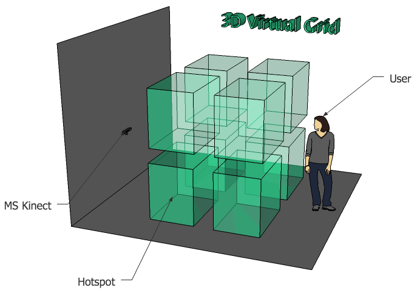

Introduction
Sonorium applies a tridimensional virtual grid to a physical space (see figure below) allowing to create a set of hotspots that are activated by the user’s position, triggering a predetermined sound or MIDI note. The application implements a perspective distortion correction, allowing to a create an interaction area corresponding to a cube or a parallelepiped if desired. This area can then be filled with a predetermined number of hotspots of equal dimensions. Thus making a 3D virtual grid where you can map an audio sample or MIDI note to each one of these hotspots, triggering them whenever a user occupies that hotspot. Sonorium allows the creation of 16 hotspots per axis (x, y and z), making a total of 4096 available hotspots.
Requirements and dependencies
To use Sonorium you will need a computer with OSX 10.6.8 (or higher) and a Microsoft Kinect Camera (or an Asus X-tion PRO, although this camera was not tested).
Sonorium was developed using MaxMSP and uses the jit.openni object, developed by Dale Phurrough, to interface with the MS Kinect camera. In order to use Sonorium you will first need to install the jit.openni dependencies. Then you can just download Sonorium by pressing the 'Download.zip' button in the top of the page and moving the downloaded folder to your computer's Application folder.
Additional information
There is a user manual (both in Portuguese and English) with detailed information of the application within the application folder.
Authors and Contributors
This application was developed by @p1nh0 (aka Tiago Ângelo) and Digitópia Collective (@Digitópia) — Casa da Música.
Support or Contact
If you're experiencing any problem with the software please check the manual first. For any other questions you can contact Sonorium support or Digitópia — Casa da Música.
Thanks for your preference!